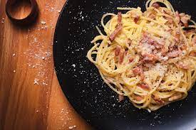

Carbonara recipe

Description
Carbonara is a pasta sauce very popular that tastes incredibly good in your mouth. Originaly coming from the coal miners in Italy, they wanted a pasta
recipe that could give them a lot of strengh for work. Carbonara is served with a lot of pepper, one says that it comes from the fact that I was first eaten
by coal miners !
The real trick in this recipe is the sauce that is obviously really easy to screw up. The secret of the mantecattura, is to use the pasta water full of starch
to mix it with the egg preparation in order create a super creamy and flavorfull sauce.
Ingredients
- 2 egg yolk and one whole egg
- Guanciale
- Pecorino romano
- Spaghettis
- A lot of black pepper
Steps
- On a medium hot pan toss in your Guanciale
- Put your pasta into boiling water
- In a separate recipient, put your eggs and your cheeze and mix them well
- Take a mug full of pasta water after 5 minutes of cooking
- Put a dash of pasta water in the egg mix and then mix
- Put your al dente pasta with the guanciale and turn off the heat
- Wait a bit for it to cool down, then put the egg mix with a good splash of pasta water
- Mix everything well, create the sauce and it's ready !